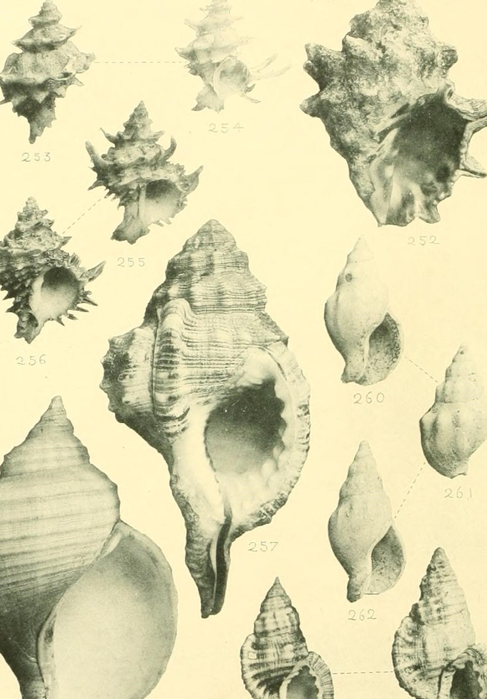

Why does the moon exert such a strong influence? Think of it like this: The moon controls the tides of the ocean, and we are made of 60% water. We can feel its tugs and movement in everyday life.
Moon mapping—or the process of deliberately acting in accordance with the moon cycle—can guide our daily decision-making. Each lunar phase is thought to give off a different energy, and we can harness that energy through daily life. Click begin to learn more and to start mapping activities.